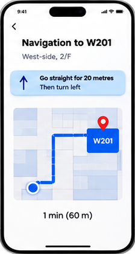
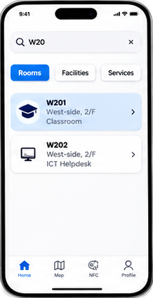
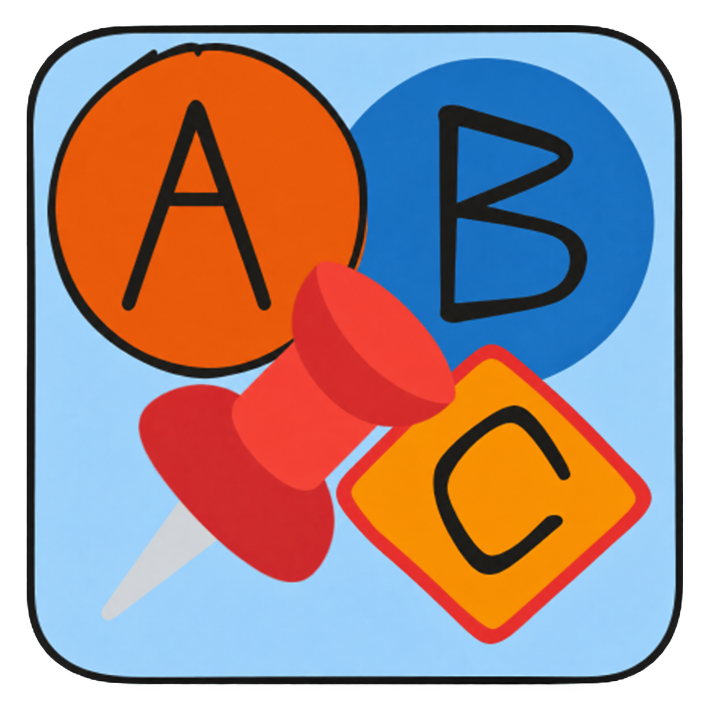

Meet ABC-chan, your intelligent indoor navigation assistant.



ABC-chan
Follow the proposed route from the entrance to W201.
Discover
Find a destination and identify its floor.
West-side / 2F
Search classrooms, facilities and campus services.